Sandwich
Projet architectural – ENSAL

Contexte et Objectif
Ce projet, mené sur le campus de l’ENSAL, portait sur la réhabilitation d'un élément existant. L'objectif était de transformer un banc en béton désuet en une table de pique-nique durable grâce à l'ajout d'une structure en bois. Ce processus nous a permis de maîtriser l'intégralité de la chaîne de production : du design initial aux plans d'exécution, jusqu'à la réalisation concrète à l'échelle 1:1.
Démarche Technique : Fixation Réversible et Durable
Notre principal parti pris technique a été de garantir l'intégrité totale du banc en béton. Contrairement aux méthodes destructives (perçage), nous avons développé une structure démontable et réversible.
Le système de fixation, d'où le nom "Sandwich," repose sur un assemblage qui vient serrer le banc de part et d'autre. Ce dispositif simple assure à la fois une stabilité maximale et la réversibilité du mobilier. Ce choix technique renforce la durabilité de l'ensemble, car l'ancrage sans perçage évite la fragilisation du béton à long terme.
Design et Clarté
Le design épuré de la structure met en évidence la technique d’assemblage elle-même, celle-ci étant volontairement laissée visible. Simultanément, nous avons optimisé l'ergonomie du mobilier en ajustant avec précision la distance entre l’assise et le plateau, garantissant confort et fonctionnalité. Le résultat est une table solide, largement utilisée sur le campus, et qui illustre l'efficacité et la clarté de notre démarche conceptuelle et constructive.
Plans d'assemblage et images
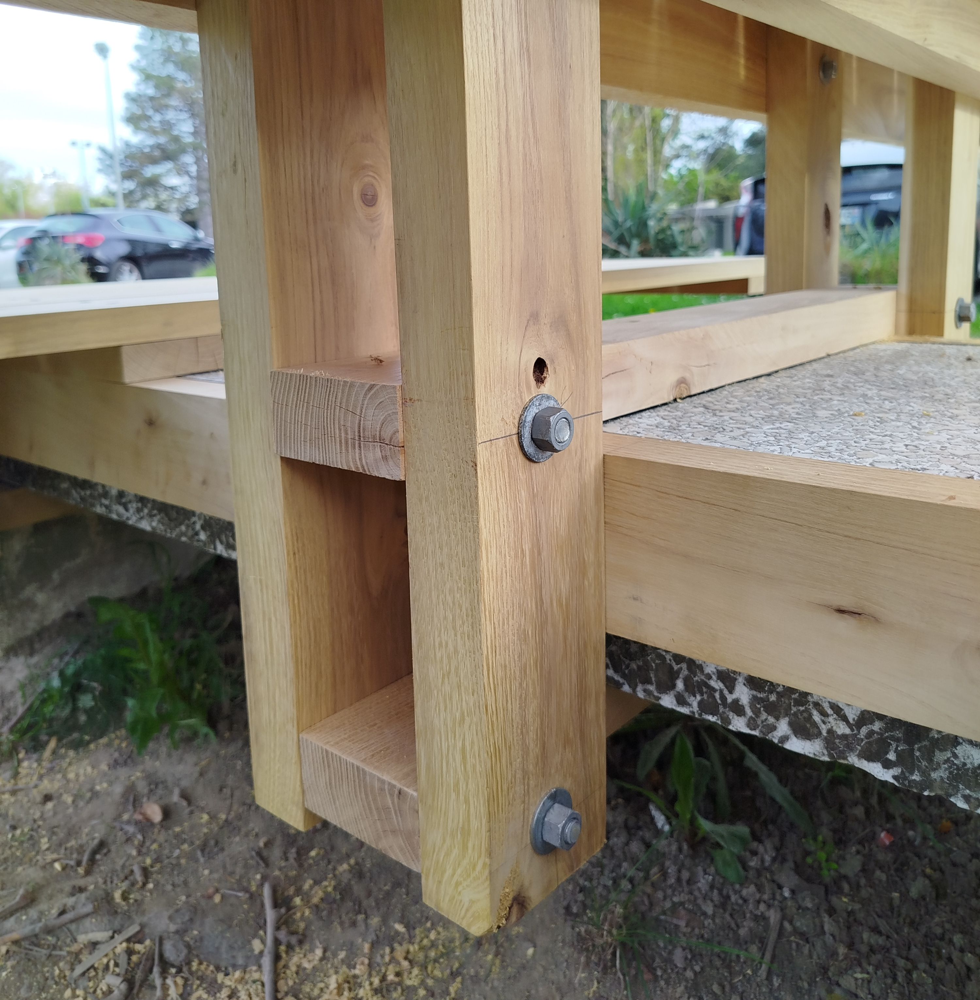
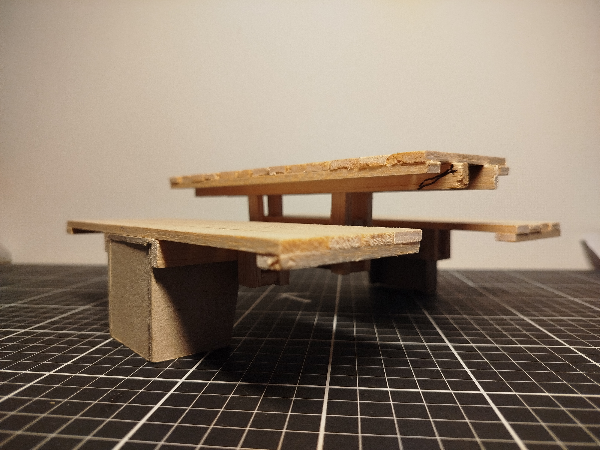
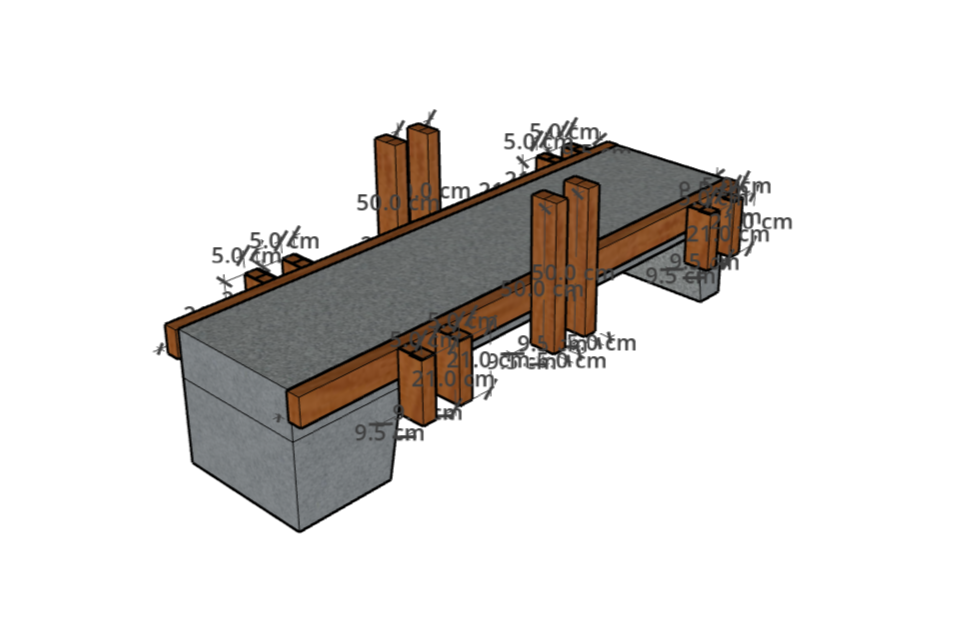
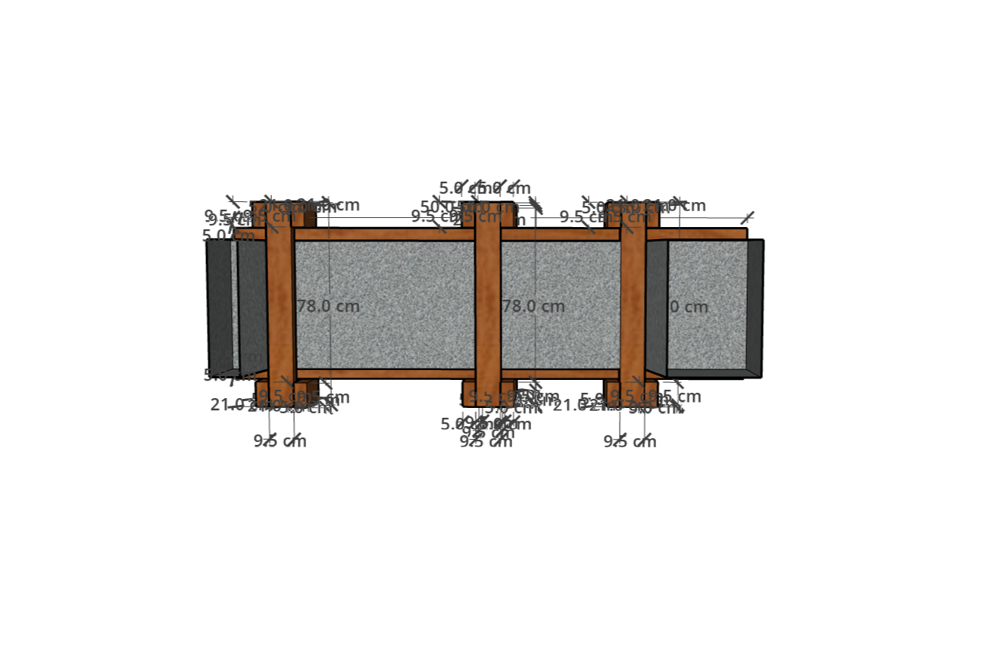
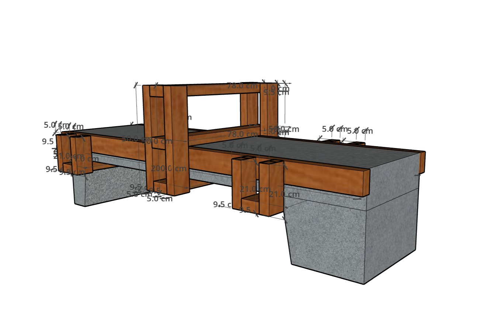
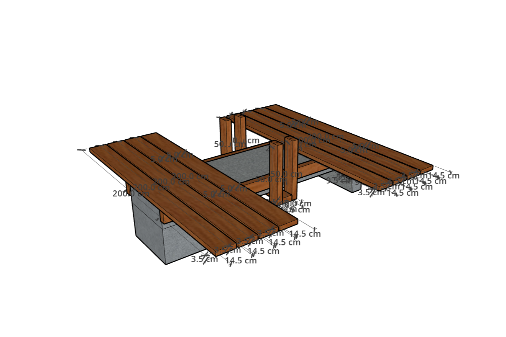
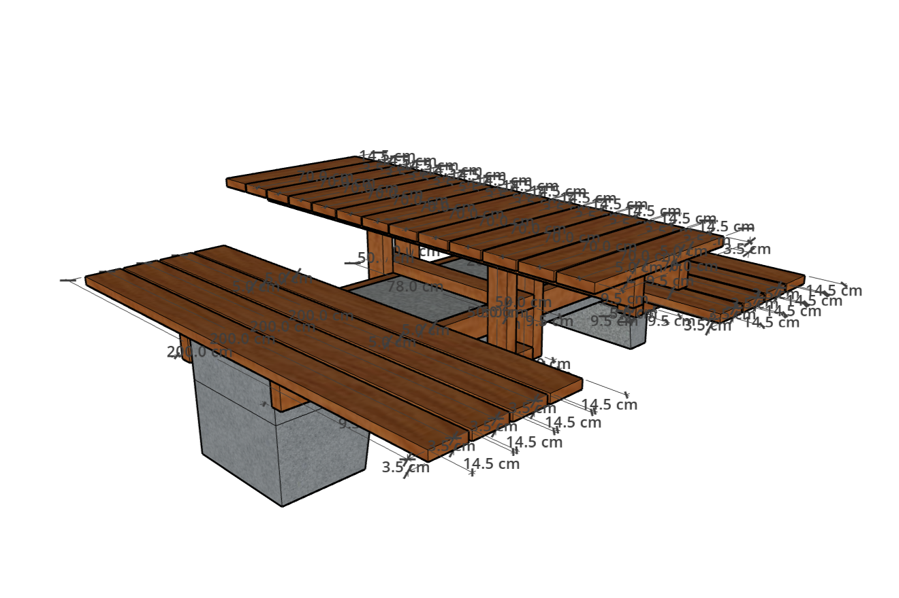
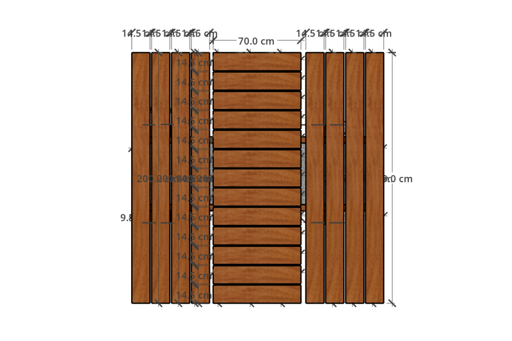
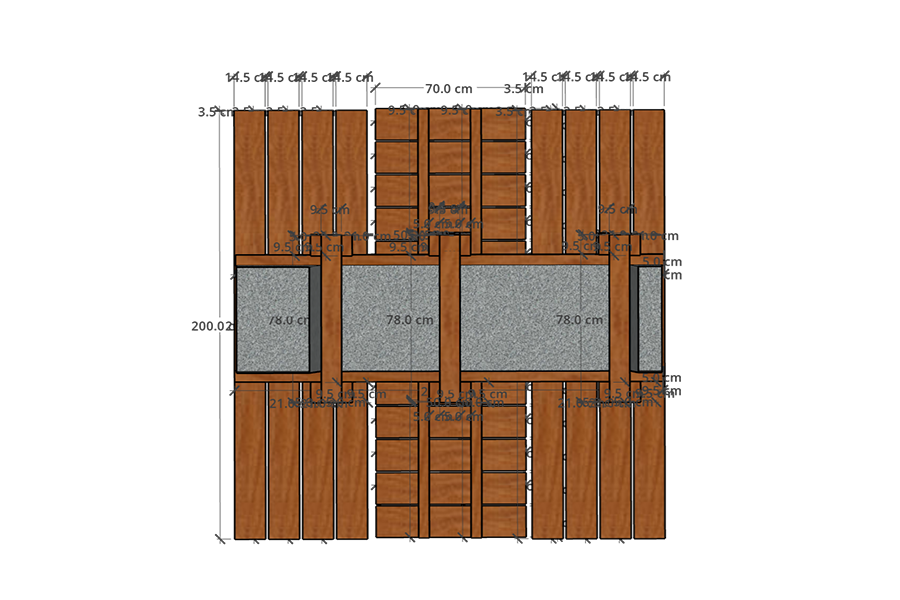
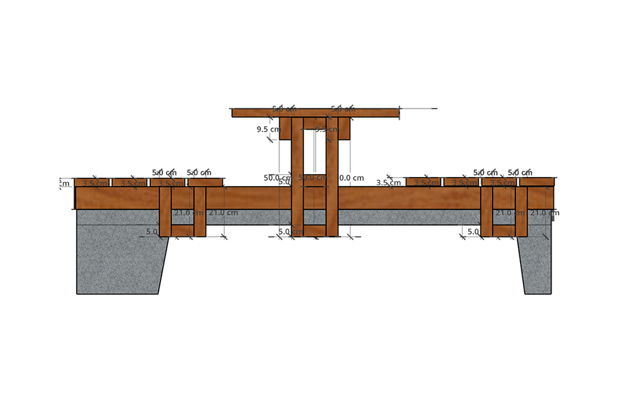
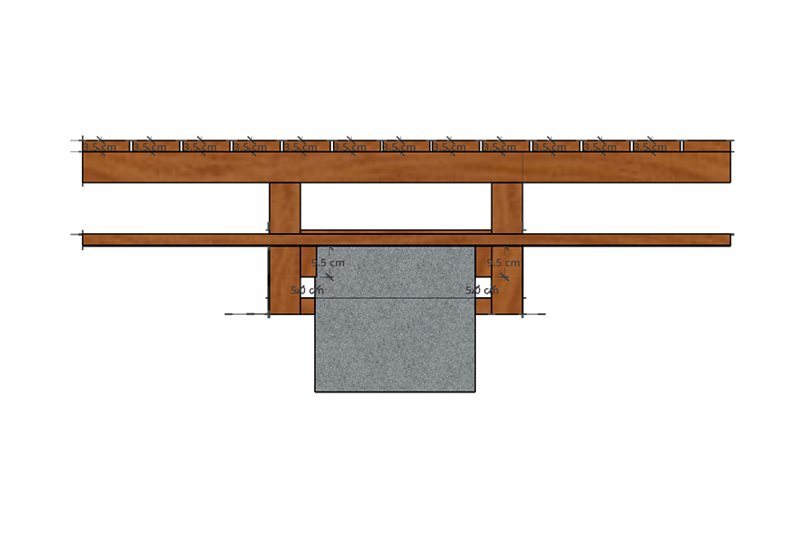